Evidências — Iteração 8
Período: 26/10/2026 a 02/11/2026
Histórias trabalhadas: US10, US11, US16, US17, US19, US20, US23, US13
Engenharia de Requisitos
Gravações e Atas
| Evidência | Descrição |
|---|---|
| Validação Cliente — US10 | Vídeo de validação da US10 (Cadastrar princípio tático) com o cliente Marcus Vinicius. |
| Validação Cliente — US11 | Vídeo de validação da US11 (Editar princípio tático) com o cliente Marcus Vinicius. |
| Print WhatsApp 03/11 | Validação da US16 (Cadastrar sessão), com a alteração do tempo da sessão (D06). |
| Print WhatsApp 03/11 | Validação da US17 (Editar sessão), com a alteração do tempo da sessão (D06). |
| Print WhatsApp 03/11 | Validação da US19 (Cadastrar atividade na biblioteca), com a alteração do tempo da atividade (D07). |
| Print WhatsApp 03/11 | Validação da US20 (Editar atividade na biblioteca), com a alteração do tempo da atividade (D07). |
| Print WhatsApp 06/11 | Validação da US23 (Reutilizar atividade cadastrada). |
| Print WhatsApp 06/11 | Validação da US13 (Cadastrar atividade na sessão), já com o campo Ordem (D08). |
| Ata 26/10 (Reunião Equipe 15) | Planejamento e distribuição das histórias de sessão de treino e biblioteca de atividades (US10, US11, US13, US16, US17, US19, US20, US23). |
| Ata 02/11 (Reunião Equipe 16) | Revisão das entregas da iteração, validação das regras de negócio de atividades e confirmação da conclusão do fluxo de sessão. |
| Print WhatsApp 03/10 | O cliente define que princípios táticos e atributos técnicos são digitados e depois ficam disponíveis para seleção, e pede para trocar "comportamento" por "princípio tático" (US10, US11, US19). |
| Print WhatsApp 31/10 | Vídeos dos protótipos das US10, US11, US16, US17, US19 e US20 enviados para validação. |
| Print WhatsApp 03/11 | O cliente pede o campo Ordem no lugar do Objetivo no cadastro da atividade na sessão (US13, US16). |
| Print WhatsApp 03/11 | Protótipos com as alterações pedidas enviados ao cliente. |
| Print WhatsApp 05/11 | Vídeos dos protótipos das US13 e US23 enviados para validação. |


Protótipos
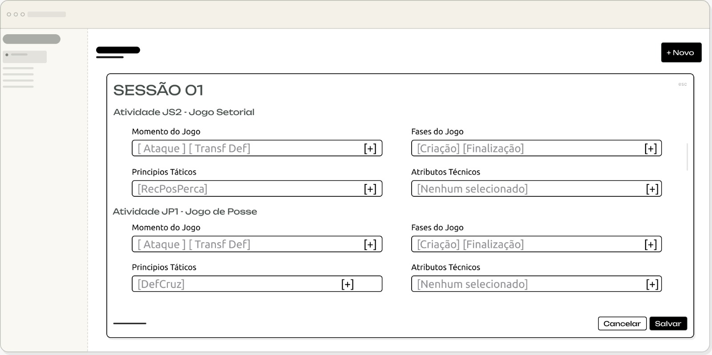
Figura 1: Vinculando comportamentos táticos.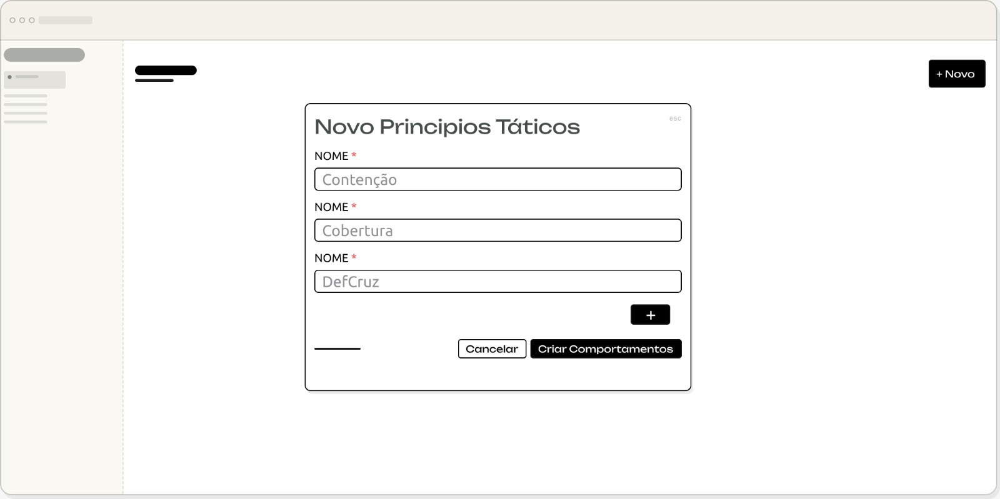
Figura 2: Formulário de cadastro de comportamento tático.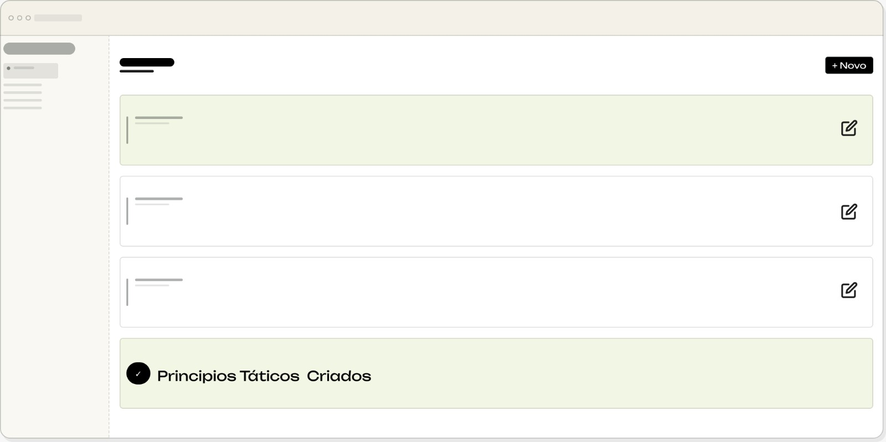
Figura 3: Listagem de comportamentos táticos atualizada.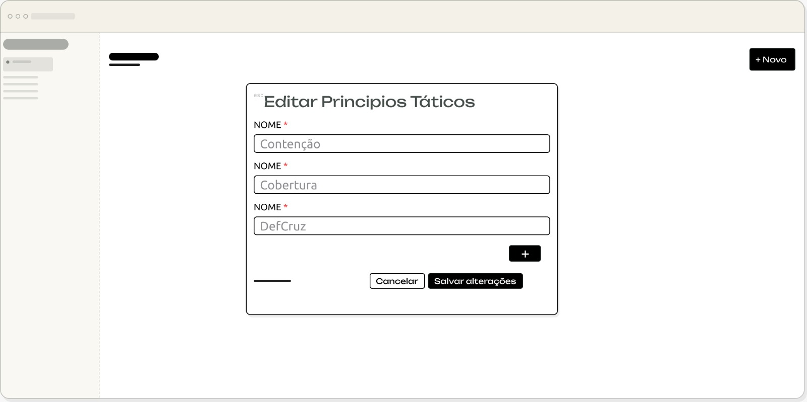
Figura 1: Formulário de edição de comportamento tático.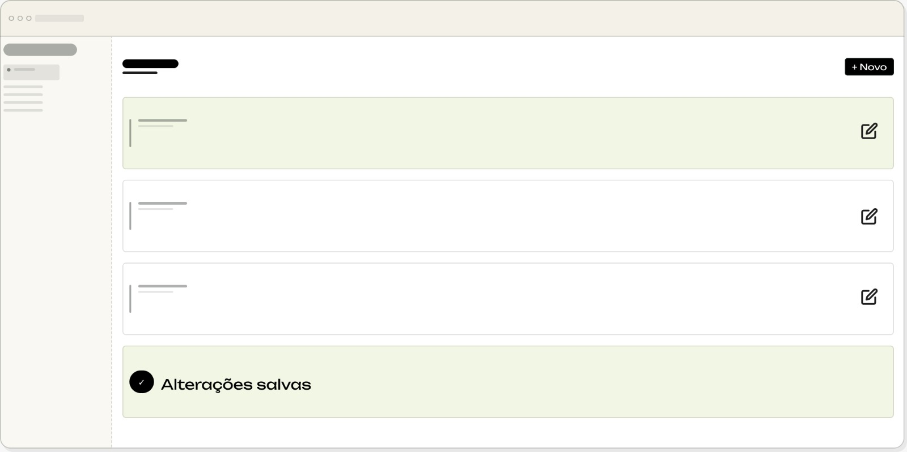
Figura 2: Listagem de comportamentos táticos atualizada após edição.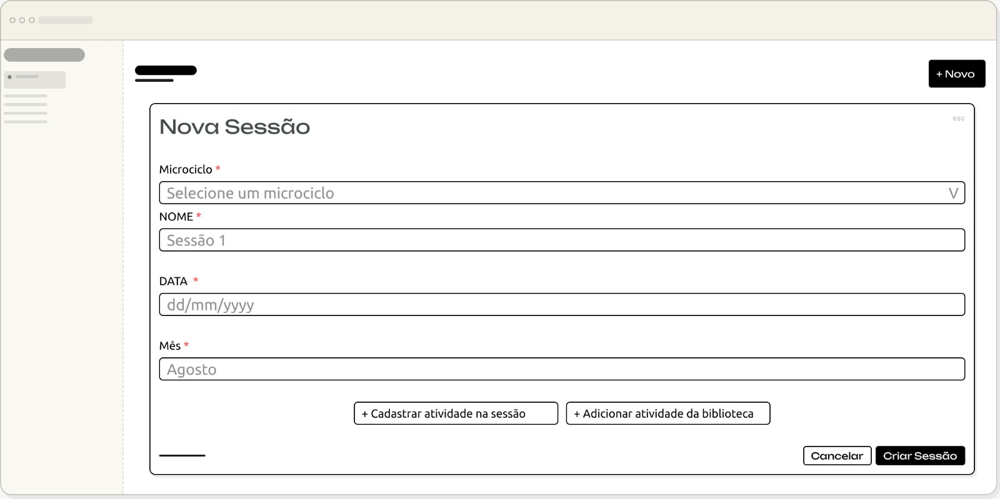
Figura 1: Formulário de cadastro de sessão de treino.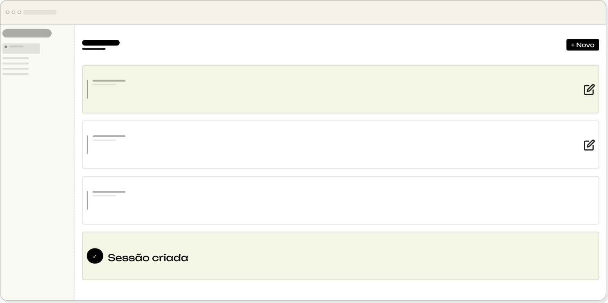
Figura 2: Listagem de sessões atualizada.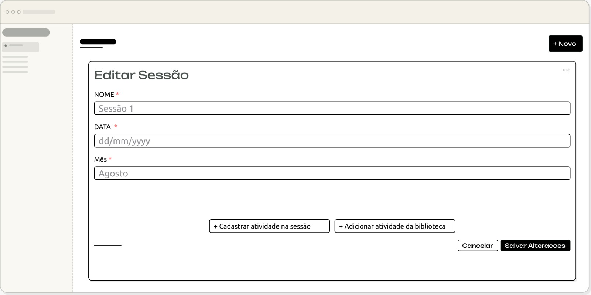
Figura 1: Formulário de edição dos dados da sessão.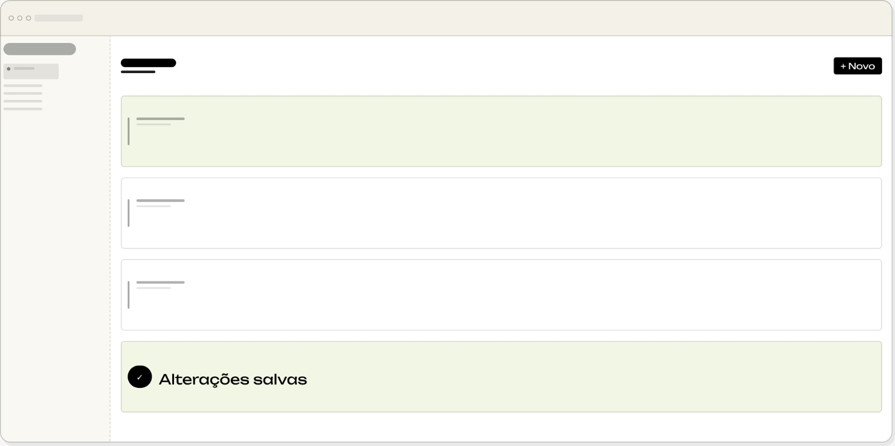
Figura 2: Listagem de sessões atualizada após edição.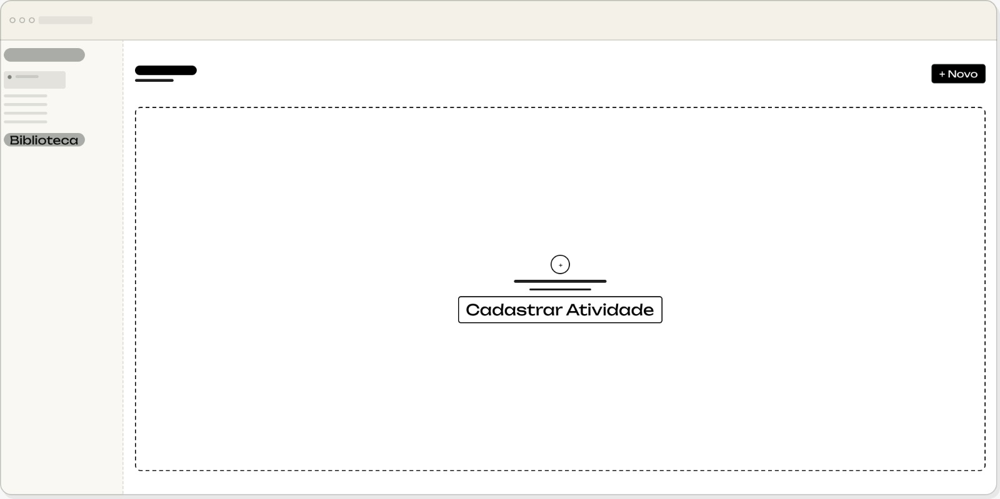
Figura 1: Ação de criar atividade na biblioteca.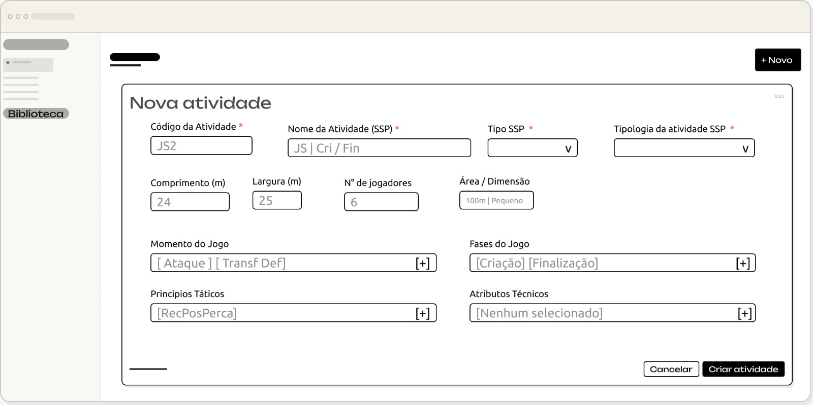
Figura 2: Formulário de cadastro de atividade na biblioteca.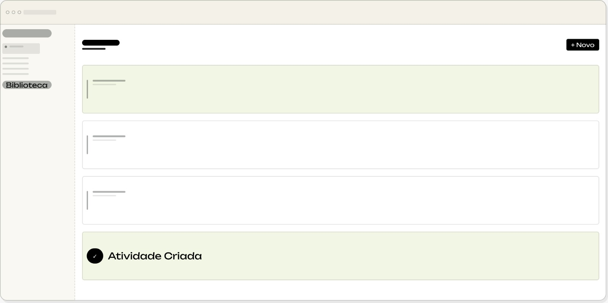
Figura 3: Listagem de atividades da biblioteca atualizada.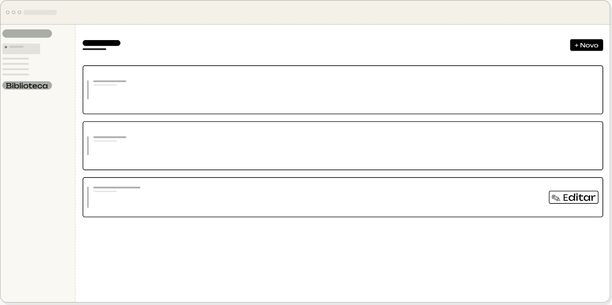
Figura 1: Seleção para edição da atividade.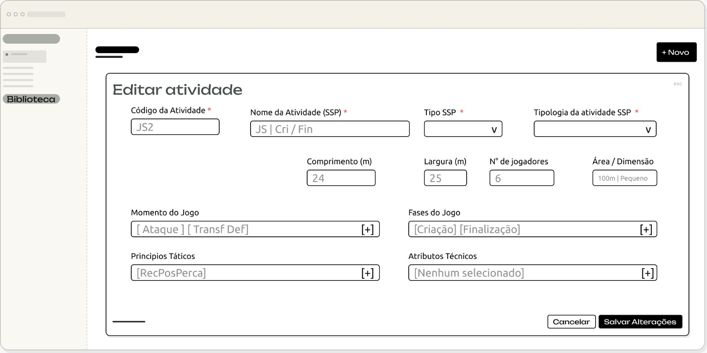
Figura 2: Formulário de edição dos dados da atividade.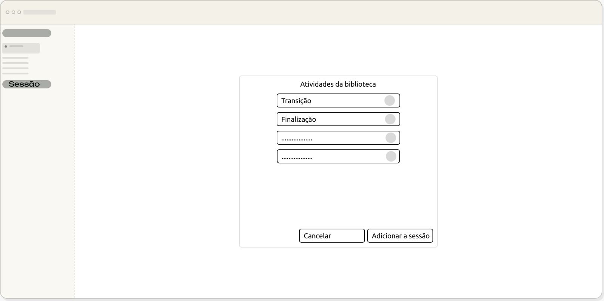
Figura 1: Adicionar atividade da biblioteca na sessão de treino.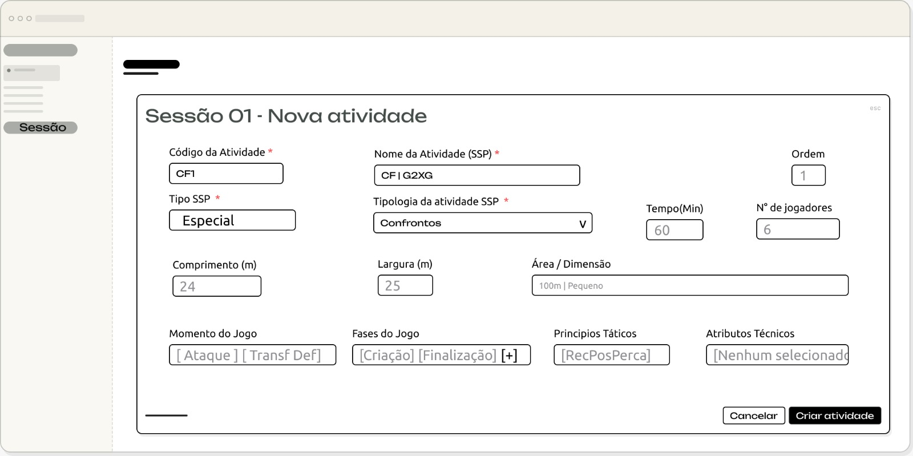
Figura 1: Cadastro de atividade diretamente na sessão de treino.Confronto Cruzado
| História | Item declarado | Evidência no protótipo | Status |
|---|---|---|---|
| US10 | Princípio tático salvo e disponível para seleção nas atividades (CA) | Vínculo com a atividade | [x] |
| US10 | Bloqueio de nome duplicado (CA) | Ausente: nenhum frame mostra o alerta | [] |
| US10 | Termo "princípio tático" (RF, US, D04) | Divergente: o formulário tem o botão "Criar Comportamentos" | [] |
| US10 | Cadastro de um princípio tático por vez (RF) | Divergente: o formulário cadastra vários de uma vez (botão "+"), o que não está declarado | [] |
| US11 | Nome atualizado na lista após a edição (CA) | Lista atualizada | [x] |
| US11 | Atividades já salvas exibem o nome atualizado (CA) | Ausente: nenhum frame mostra uma atividade com o nome atualizado | [] |
| US16 | Sessão vinculada a um microciclo válido (CA, RN04) | Formulário | [x] |
| US16 | Data e número sequencial da sessão (RF) | Divergente: o formulário pede Nome, Data e Mês, e o número sequencial não aparece | [] |
| US16 | Campo Microciclo obrigatório (CA) | Divergente: a segunda versão do formulário não tem o campo Microciclo | [] |
| US16 | Tempo total calculado pela soma das atividades (CA, D06) | Ausente: nenhum frame mostra o tempo total da sessão | [] |
| US16 | Atividades com a mesma ordem contam o tempo uma única vez (CA, RN03) | Ausente: nenhum frame mostra atividades simultâneas | [] |
| US17 | Edição de nome, data e mês (CA) | Formulário de edição | [x] |
| US17 | Recálculo do tempo total ao alterar atividades (CA) | Ausente: nenhum frame mostra o tempo total recalculado | [] |
| US19 | Área e dimensão calculadas automaticamente (CA, RN01, RN02) | Formulário | [x] |
| US19 | Campos táticos e técnicos opcionais (CA, RN05) | Formulário | [x] |
| US19 | Atividade da biblioteca sem campo de tempo (D07) | Formulário | [x] |
| US19 | Estado vazio antes do primeiro cadastro (DoR) | Estado vazio | [x] |
| US20 | Recálculo da área e da dimensão ao editar (CA, RN01, RN02) | Formulário de edição | [x] |
| US20 | Edição não altera sessões passadas (CA) | Ausente: nenhum frame mostra uma sessão anterior preservada | [] |
| US20 | Atividade da biblioteca sem Objetivo e sem Tempo (D07, D08) | Divergente: o frame antigo "Baixa fidelidade · US 19 - Editar Atividade da Biblioteca" ainda tem os campos Objetivo e Tempo | [] |
| US13 | Área e dimensão calculadas automaticamente (CA, RN01, RN02) | Formulário | [x] |
| US13 | Campos Ordem e Tempo na atividade da sessão (D07, D08) | Formulário | [x] |
| US13 | Campos táticos e técnicos opcionais (CA, RN05) | Formulário | [x] |
| US13 | Atividades com a mesma ordem agrupadas como simultâneas (CA, RN03) | Ausente: nenhum frame mostra o agrupamento | [] |
| US23 | Seleção de atividade da biblioteca para a sessão (RF) | Seleção na biblioteca | [x] |
| US23 | Campos da atividade preenchidos automaticamente (CA) | Sessão com atividade adicionada | [x] |
| US23 | Edição após a importação sem alterar a biblioteca (CA) | Ausente: nenhum frame mostra a edição da atividade importada | [] |


Resultado: 14 itens conferidos e 13 com pendência. O confronto cruzado foi adotado em 16/11/2026, depois da construção desta iteração.
Registro de Decisões e Matriz de Impacto
| ID | Decisão | Evidência | Impacto nos artefatos | Status |
|---|---|---|---|---|
| D04 | 03/10 — Renomear "comportamento tático" para "princípio tático". | Print WhatsApp 03/10 | Atualizados: RF10, RF11, US e RN05. Pendentes: critério do RF10, protótipo, código e Catálogo de Termos. | [] |
| D05 | 03/10 — Princípios táticos e atributos técnicos são digitados uma vez e passam a ficar disponíveis para seleção. | Print WhatsApp 03/10 | Atualizados: critério do RF10, código e documentação. A verificar: protótipo. | [] |
| D06 | 03/11 — O tempo da sessão é a soma dos tempos das atividades, sem campo próprio no cadastro da sessão. | Print WhatsApp 03/11 | Atualizados: critérios do RF16 e RF17, RN03, protótipo e documentação. A verificar: código. | [] |
| D07 | 03/11 — O tempo da atividade é informado ao adicioná-la à sessão, e não na biblioteca. | Print WhatsApp 03/11 | Atualizado: protótipo. Pendentes: critérios do RF19 e RF23 e documentação. A verificar: código. | [] |
| D08 | 03/11 — O campo Objetivo da atividade na sessão é substituído pelo campo Ordem. | Print WhatsApp 03/11 | Atualizados: critério do RF13, RN03, protótipo e documentação. A verificar: RN05 e código. | [] |
Definition of Done
Checklist da Iteração 8
| Critério do DoD | Evidência | Status |
|---|---|---|
| Os critérios de aceitação foram atendidos? | Issue US10 Issue US11 Issue US16 Issue US17 Issue US19 Issue US20 Issue US23 Issue US13 |
[] |
| O código foi integrado na branch staging e revisado? | PR #26 (US16, US17) · PR #45, revertido no PR #46 e reintegrado no PR #48, e PR #51 (US10, US11) · PR #52 (US19) · PR #53 (US13), integrados na staging. A US20 e a US23 ainda não têm PR. |
[] |
| Os workflows de CI/CD do projeto foram executados com sucesso? | O repositório tem apenas o workflow de deploy da documentação (deploy.yml); não há workflow de CI para o código. | [] |
| Os testes relacionados foram executados com sucesso? | Testes unitários do backend em apps/treinos/tests.py (20 testes), sem registro de execução publicado. O frontend não tem testes. |
[] |
| Os Requisitos Não Funcionais (RNFs) vinculados foram verificados? | Pendente: verificação ainda não registrada. | [] |
| A verificação integrada dos fluxos foi realizada com sucesso? | Pendente: verificação ainda não registrada. | [] |
| A documentação e evidências da entrega estão atualizadas? | Esta página de evidências, atualizada em 16/11/2026. | [] |
| A funcionalidade da User Story desenvolvida foi validada pelo cliente? | [x] Validação US10 [x] Validação US11 [] Protótipo validado — US16 [] Protótipo validado — US17 [] Protótipo validado — US19 [] Protótipo validado — US20 [] Protótipo validado — US23 [] Protótipo validado — US13 |
[] |